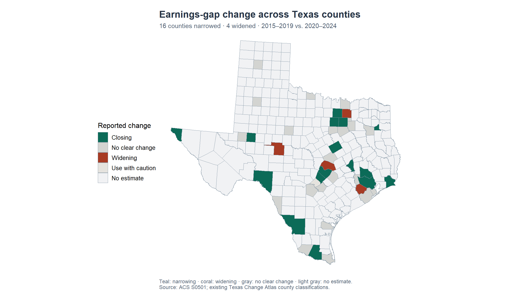
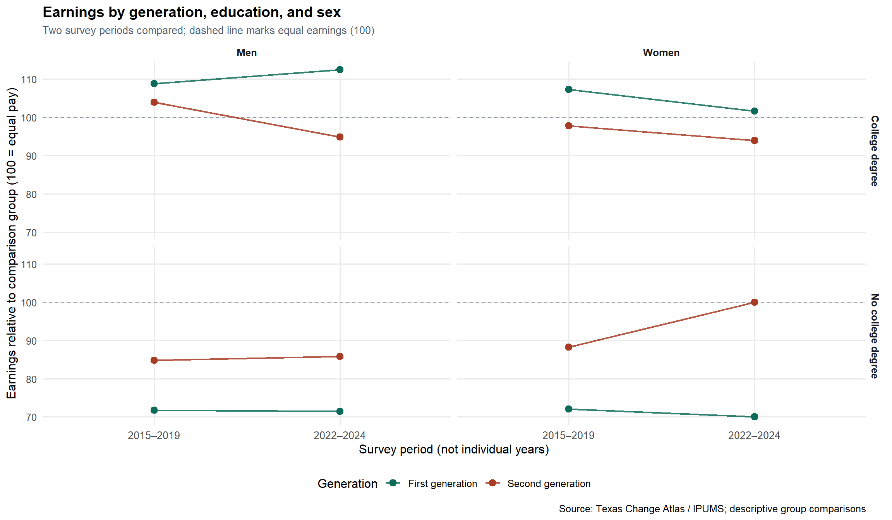
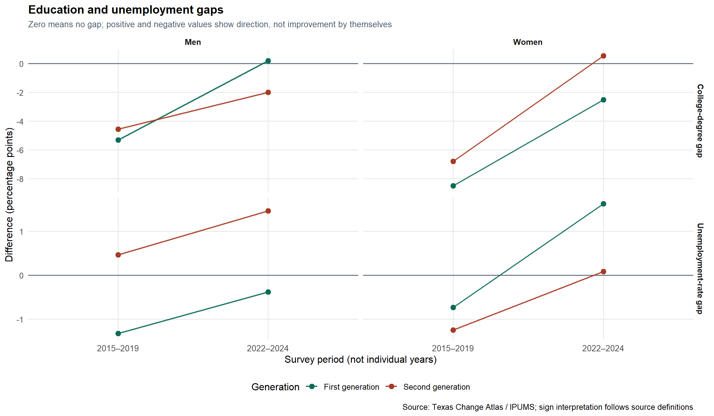
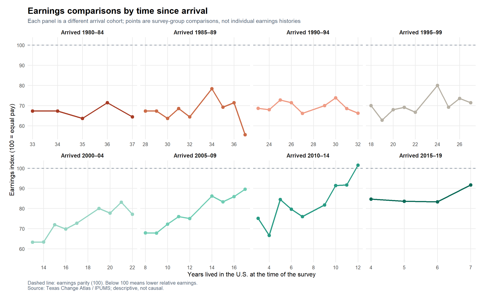

knitr::opts_chunk$set(echo = FALSE, warning = FALSE, message = FALSE,
fig.width = 10, fig.height = 6.5, out.width = "100%")
source("R/helpers.R")
library(plotly)
library(DT)
library(sf)
library(ggplot2)
# ---- Colors and fonts matched to the charts on assign006 ----
pal <- c(teal = "#259f95", coral = "#f27260", blue = "#257db2",
gold = "#e9ad25", sky = "#25abe0", purple = "#8a6ab4")
bg <- "#ffffff" # white chart background
ink <- "#263445" # dark slate text
muted <- "#6c757d" # grey notes
grid <- "#e6e9ee" # light gridlines
font_family <- "Arial, Helvetica, sans-serif"
status_colors <- c(
"Closing" = "#0C6B58",
"No clear change" = "#D3D4D1",
"Widening" = "#A73B24",
"Use with caution" = "#E5E3DE",
"No estimate" = "#F1F2F4"
)
county <- read_csv("data/county_change.csv", col_types = cols(GEOID = "c"))
state <- read_csv("data/state_change.csv", col_types = cols(GEOID = "c"))
arrival <- read_csv("data/arrival.csv", show_col_types = FALSE)
gen_e <- read_csv("data/gen_earnings.csv", show_col_types = FALSE)
gen_r <- read_csv("data/gen_rates.csv", show_col_types = FALSE)
gen_s <- read_csv("data/gen_summary.csv", show_col_types = FALSE)
shp <- readRDS("data/tx_counties.rds")
fmt1 <- function(x) ifelse(is.na(x), "n/a", sprintf("%.1f", x))
p1 <- "2015–2019"; p2 <- "2020–2024"; p2c <- "2022–2024"
# ---- Fit titles, subtitles and notes inside the dashboard cards ----
# Long text is broken into short lines (<br>) so nothing runs off the card, and the
# top and bottom margins grow with the number of lines so nothing overlaps the chart.
wrap_br <- function(txt, width) paste(strwrap(txt, width = width), collapse = "<br>")
n_lines <- function(txt) length(strsplit(txt, "<br>", fixed = TRUE)[[1]])
dress <- function(p, title, subtitle, note) {
sub <- wrap_br(subtitle, 130)
nt <- wrap_br(note, 130)
head <- paste0("<b>", title, "</b><br><span style='font-size:12px;color:#6c757d'>", sub, "</span>")
p %>% layout(
title = list(text = head, x = 0.01, xanchor = "left", y = 1, yref = "container",
yanchor = "top", pad = list(t = 14), font = list(size = 15, color = ink)),
margin = list(t = 58 + 15 * n_lines(sub), b = 72 + 15 * n_lines(nt), l = 70, r = 20),
annotations = list(list(text = nt, xref = "paper", yref = "paper",
x = 0, y = 0, yshift = -58, xanchor = "left", yanchor = "top",
showarrow = FALSE, align = "left",
font = list(size = 12, color = muted))),
paper_bgcolor = bg, plot_bgcolor = bg,
font = list(family = font_family, size = 13, color = ink),
hoverlabel = list(bgcolor = "#ffffff", bordercolor = ink,
font = list(family = font_family, color = ink))
) %>% config(displaylogo = FALSE, responsive = TRUE)
}
legend_style <- function(title = "Click to hide/show") {
list(title = list(text = title, font = list(size = 12, color = ink)),
font = list(size = 11, color = ink), bgcolor = "rgba(0,0,0,0)", itemsizing = "constant")
}
finish <- function(p, title, subtitle, xlab, ylab, note, shapes = list()) {
p %>%
layout(xaxis = list(title = list(text = xlab, standoff = 8, font = list(size = 15, color = ink)), zeroline = FALSE, automargin = TRUE,
gridcolor = grid, showline = TRUE, linecolor = "#9aa5b4",
tickfont = list(size = 12, color = ink)),
yaxis = list(title = list(text = ylab, standoff = 8, font = list(size = 15, color = ink)), zeroline = FALSE, automargin = TRUE,
gridcolor = grid, showline = TRUE, linecolor = "#9aa5b4",
tickfont = list(size = 12, color = ink)),
shapes = shapes,
legend = legend_style()) %>%
dress(title, subtitle, note)
}
hline <- function(y, dash = "dot") list(type = "line", xref = "paper", x0 = 0, x1 = 1,
y0 = y, y1 = y, line = list(dash = dash, color = ink, width = 1.5))
vline <- function(x, dash = "dot") list(type = "line", yref = "paper", y0 = 0, y1 = 1,
x0 = x, x1 = x, line = list(dash = dash, color = ink, width = 1.5))
metric_info <- list(
earnings = list(name = "Earnings", parity = 100,
ylab = "Earnings score (100 = equal pay)",
unit = ""),
degree = list(name = "College degrees", parity = 0,
ylab = "Degree gap (percentage points)",
unit = " pts"),
unemployment = list(name = "Unemployment", parity = 0,
ylab = "Unemployment gap (percentage points)",
unit = " pts")
)
# ---------------- Chart 1: bubble chart ----------------
bubble <- function(m) {
info <- metric_info[[m]]
d <- county %>%
filter(metric == m, status != "No estimate") %>%
mutate(sym = case_when(
metro == "Large metro" ~ "circle",
metro == "Rural" ~ "diamond",
TRUE ~ "square"),
sz = 8 + 24 * sqrt(pmax(pop, 0) / max(pmax(pop, 0), na.rm = TRUE)),
hover = paste0("<b>", county_name, "</b> (", metro, ")",
"<br>", p2, ": ", fmt1(g24), " ± ", fmt1(1.645 * se24), info$unit,
"<br>", p1, ": ", fmt1(g19), " ± ", fmt1(1.645 * se19), info$unit,
"<br>Status: ", status,
"<br>Born abroad: ", fmt1(pct_fb), "%",
"<br>Population: ", format(pop, big.mark = ","),
"<br><i>± is the 90% margin of error</i>"))
p <- plot_ly()
for (st in c("Closing", "No clear change", "Widening", "Use with caution")) {
s <- d %>% filter(status == st)
if (nrow(s) == 0) next
p <- p %>% add_trace(
x = s$pct_fb, y = s$g24, type = "scatter", mode = "markers", name = st,
text = s$hover, hoverinfo = "text",
marker = list(symbol = s$sym, size = s$sz, sizemode = "diameter",
color = status_colors[[st]],
opacity = if (st == "Use with caution") 0.6 else 0.9,
line = list(color = "#263445", width = 0.8)))
}
n_c <- sum(d$status == "Closing"); n_w <- sum(d$status == "Widening")
n_n <- sum(d$status == "No clear change"); n_u <- sum(d$status == "Use with caution")
finish(p,
title = sprintf("%s: the gap closed in %s and widened in %d", info$name,
if (n_c == 1) "1 county" else paste(n_c, "counties"), n_w),
subtitle = sprintf("Foreign-born vs. native-born residents, %s compared with %s. %s no clear change and %d %s too uncertain to call.",
p1, p2, if (n_n == 1) "1 county showed" else paste(n_n, "counties showed"),
n_u, if (n_u == 1) "is" else "are"),
xlab = paste0("Residents born abroad, ", p2, " (%)"),
ylab = info$ylab,
note = paste0("Each bubble is a county; size = population. Circle = large metro, square = other metro, diamond = rural. ",
"Dotted line = no gap. Source: U.S. Census Bureau, ACS 5-year Table S0501; USDA 2023 Rural-Urban Continuum Codes."),
shapes = list(hline(info$parity)))
}
# ---------------- Supplementary county map (static; no Shiny/Leaflet) ----------------
county_map <- function() {
m <- shp |>
sf::st_transform(5070) |>
left_join(
county |> filter(metric == "earnings") |>
select(GEOID, county_name, status, g19, g24, metro),
by = "GEOID"
) |>
mutate(
status = factor(coalesce(as.character(status), "No estimate"),
levels = names(status_colors))
)
n_closing <- sum(m$status == "Closing")
n_widening <- sum(m$status == "Widening")
ggplot(m) +
geom_sf(aes(fill = status), color = "#8193A2", linewidth = 0.18) +
scale_fill_manual(values = status_colors, drop = FALSE, name = "Reported change") +
coord_sf(datum = NA, expand = TRUE) +
labs(
title = "Earnings-gap change across Texas counties",
subtitle = paste0(n_closing, " counties narrowed · ", n_widening,
" widened · 2015–2019 vs. 2020–2024"),
caption = "Teal: narrowing · coral: widening · gray: no clear change · light gray: no estimate.\nSource: ACS S0501; existing Texas Change Atlas county classifications."
) +
theme_void(base_size = 12) +
theme(
plot.title = element_text(face = "bold", size = 16, color = "#263445"),
plot.subtitle = element_text(size = 11, color = "#526173"),
plot.caption = element_text(size = 9, color = "#526173", hjust = 0),
legend.position = "left",
legend.text = element_text(size = 10),
plot.margin = margin(12, 15, 12, 15)
)
}
# ---------------- Searchable county table ----------------
county_table <- function() {
t <- county %>%
select(county_name, metro, pct_fb, metric, g19, g24, status) %>%
pivot_wider(names_from = metric, values_from = c(g19, g24, status)) %>%
transmute(County = county_name, Type = metro, `Born abroad (%)` = round(pct_fb, 1),
`Earnings score 2015-19` = round(g19_earnings, 1),
`Earnings score 2020-24` = round(g24_earnings, 1),
`Earnings change (pts)` = round(g24_earnings - g19_earnings, 1),
`Earnings change category` = status_earnings,
`Degree gap 2020-24 (pts)` = round(g24_degree, 1),
`Degree change (pts)` = round(g24_degree - g19_degree, 1),
`Degree change category` = status_degree,
`Unemployment gap 2020-24 (pts)` = round(g24_unemployment, 1),
`Unemployment change (pts)` = round(g24_unemployment - g19_unemployment, 1),
`Unemployment change category` = status_unemployment)
datatable(t, rownames = FALSE, filter = "top",
class = "stripe hover compact cell-border",
options = list(pageLength = 15, scrollX = TRUE, autoWidth = TRUE),
caption = "Type your county's name in the Search box. Earnings score: 100 = equal pay with native-born residents.")
}
# ---------------- Chart 2: two-period comparison, faceted like the updated dashboard ----------------
who_colors <- c("First generation" = "#0C6B58", "Second generation" = "#A73B24")
cohort_palette_match <- c("#A73B24", "#CB6B47", "#EF9B84", "#B7B1A5",
"#95D5C3", "#70CDB4", "#289B84", "#0C6B58")
gen_scatter <- function() {
d <- gen_e |>
mutate(
period_label = if_else(period == "2015-2019", "2015–2019", "2022–2024"),
period_label = factor(period_label, levels = c("2015–2019", "2022–2024")),
generation = if_else(gen == "First", "First generation", "Second generation"),
education = if_else(deg, "College degree", "No college degree"),
sex = if_else(female, "Women", "Men"),
group = paste(generation, education, sex, sep = " · ")
)
ggplot(d, aes(x = period_label, y = score, group = group, color = generation)) +
geom_hline(yintercept = 100, linetype = "dashed", color = "#7c8795", linewidth = 0.5) +
geom_line(linewidth = 0.8, alpha = 0.85) +
geom_point(size = 2.8) +
facet_grid(education ~ sex) +
scale_color_manual(values = who_colors) +
labs(
title = "Earnings by generation, education, and sex",
subtitle = "Two survey periods compared; dashed line marks equal earnings (100)",
x = "Survey period (not individual years)",
y = "Earnings relative to comparison group (100 = equal pay)",
color = "Generation",
caption = "Source: Texas Change Atlas / IPUMS; descriptive group comparisons"
) +
theme_minimal(base_size = 12) +
theme(
plot.title = element_text(face = "bold", size = 14),
plot.subtitle = element_text(size = 10, color = "#526173"),
axis.text.x = element_text(size = 10),
panel.grid.minor = element_blank(),
legend.position = "bottom",
strip.text = element_text(face = "bold")
)
}
# ---------------- Chart 4: two-period gap comparison, faceted like the updated dashboard ----------------
dumbbell <- function() {
d <- gen_r |>
mutate(
period_label = if_else(period == "2015-2019", "2015–2019", "2022–2024"),
period_label = factor(period_label, levels = c("2015–2019", "2022–2024")),
generation = if_else(gen == "First", "First generation", "Second generation"),
sex = if_else(female, "Women", "Men"),
group = paste(generation, sex, sep = " · "),
measure_label = case_when(
str_detect(str_to_lower(as.character(measure)), "unemploy") ~ "Unemployment-rate gap",
str_detect(str_to_lower(as.character(measure)), "deg|educ|college") ~ "College-degree gap",
TRUE ~ as.character(measure)
)
)
ggplot(d, aes(x = period_label, y = gap, color = generation, group = group)) +
geom_hline(yintercept = 0, color = "#647080", linewidth = 0.6) +
geom_line(linewidth = 0.8, alpha = 0.9) +
geom_point(size = 2.7) +
facet_grid(measure_label ~ sex, scales = "free_y") +
scale_color_manual(values = who_colors) +
labs(
title = "Education and unemployment gaps",
subtitle = "Zero means no gap; positive and negative values show direction, not improvement by themselves",
x = "Survey period (not individual years)",
y = "Difference (percentage points)",
color = "Generation",
caption = "Source: Texas Change Atlas / IPUMS; sign interpretation follows source definitions"
) +
theme_minimal(base_size = 12) +
theme(
plot.title = element_text(face = "bold", size = 14),
plot.subtitle = element_text(size = 10, color = "#526173"),
axis.text.x = element_text(size = 10),
panel.grid.minor = element_blank(),
legend.position = "bottom",
strip.text = element_text(face = "bold")
)
}
# Separate cohort panels make age-of-arrival patterns easier to follow.
# The score is an index, NOT annual salary or a rate of earnings growth.
# ---------------- Chart 3: cohort-by-cohort earnings trends ----------------
arrival_lines <- function() {
# Cohort colors are distinct but coordinated with the Where palette.
# They identify arrival cohorts only and do NOT encode better/worse outcomes.
cohort_palette <- cohort_palette_match
a <- arrival |>
arrange(cohort_start, ysm) |>
mutate(cohort = factor(as.character(cohort),
levels = unique(as.character(cohort))))
cohort_levels <- levels(a$cohort)
if (length(cohort_levels) > length(cohort_palette)) {
stop("More than eight arrival cohorts: expand cohort_palette before plotting")
}
cohort_colors <- setNames(cohort_palette[seq_along(cohort_levels)], cohort_levels)
ggplot(a, aes(x = ysm, y = score, group = cohort, color = cohort)) +
geom_hline(yintercept = 100, linetype = "dashed", color = "#7c8795") +
geom_line(linewidth = 1.1, na.rm = TRUE) +
geom_point(size = 2.7, na.rm = TRUE) +
facet_wrap(~cohort, ncol = 4, scales = "free_x",
labeller = labeller(cohort = function(x) paste("Arrived", x))) +
scale_color_manual(values = cohort_colors, guide = "none") +
scale_x_continuous(breaks = scales::breaks_pretty(n = 4)) +
labs(
title = "Earnings comparisons by time since arrival",
subtitle = "Each panel is a different arrival cohort; points are survey-group comparisons, not individual earnings histories",
x = "Years lived in the U.S. at the time of the survey",
y = "Earnings index (100 = equal pay)",
caption = "Dashed line: earnings parity (100). Below 100 means lower relative earnings.\nSource: Texas Change Atlas / IPUMS; descriptive, not causal."
) +
theme_minimal(base_size = 12) +
theme(
plot.title = element_text(face = "bold", size = 17),
plot.subtitle = element_text(size = 11, color = "#526173"),
strip.text = element_text(face = "bold", size = 11),
panel.grid.minor = element_blank(),
plot.caption = element_text(color = "#536274", hjust = 0),
plot.margin = margin(14, 18, 14, 18)
)
}
# ---------------- Summary box values ----------------
st_e <- state %>% filter(metric == "earnings")
box_fb <- if (nrow(st_e)) paste0(fmt1(st_e$pct_fb), "%") else "n/a"
box_score <- if (nrow(st_e)) fmt1(st_e$g24) else "n/a"
box_chg <- if (nrow(st_e) && !is.na(st_e$delta)) sprintf("%+.1f", st_e$delta) else "n/a"
box_gen2 <- if (nrow(gen_s)) fmt1(gen_s$value[1]) else "n/a"
# ---------------- Four summary boxes (HTML version of value boxes) ----------------
value_boxes <- function() {
box <- function(label, value, color) {
htmltools::div(
style = paste0("flex:1 1 160px; background:#ffffff; border-top:5px solid ", color, "; ",
"border-radius:8px; padding:14px 16px; margin:6px; font-family:", font_family, ";"),
htmltools::div(style = paste0("font-size:14px; color:", ink, ";"), label),
htmltools::div(style = paste0("font-size:30px; font-weight:700; margin-top:4px; color:", color, ";"), value))
}
htmltools::div(
style = "display:flex; flex-wrap:wrap; margin:8px -6px 18px -6px;",
box("Texans born abroad, 2020–2024", box_fb, unname(pal["blue"])),
box("Foreign-born earnings score, 2020–2024 (100 = equal)", box_score, unname(pal["teal"])),
box("Change in that score since 2015–2019", box_chg, unname(pal["gold"])),
box("Second-generation earnings score, 2022–2024", box_gen2, unname(pal["purple"])))
}Assignment 8
Where
How immigrant-origin Texans compare with native-born Texans in every county, 2015–2019 versus 2020–2024.
Texans born abroad, 2020–2024
17.6%
Foreign-born earnings score, 2020–2024 (100 = equal)
79.7
Change in that score since 2015–2019
+7.5
Second-generation earnings score, 2022–2024
90.7

Who
How first- and second-generation Texans compare with third-generation Texans, by education and sex.


How fast
How immigrants’ earnings compare across arrival cohorts and years in the U.S.

How to read this chart. Each line follows one group of immigrants who arrived in the same five years. A score of 100 means they earn the same as U.S.-born workers of the same ages. If a line rises toward 100, that group is catching up. This describes patterns, not causes: immigrants whose earnings grow slowly are more likely to leave the U.S., so catching up may look faster than it really is.
The code behind the data
These are the scripts we ran with source(“R/run_all.R”) to download the data and build the summary files the charts above read from. They are shown here for reference and are not run again when this page is built.
run_all.R: runs every step in order
# Runs the whole pipeline: packages, county data, IPUMS USA, IPUMS CPS.
# Run from the project folder with: source("R/run_all.R")
if (!file.exists("dashboard.qmd")) {
stop("R is not inside the project folder. Close RStudio, then open the project by ",
"double-clicking texas-change-atlas.Rproj, and try again.")
}
source("R/00_packages.R")
source("R/01_county.R")
source("R/02_arrival.R")
source("R/03_generation.R")
message("\nAll done! The summary files are in the data folder.")
message("Next: open dashboard.qmd and click the Render button.")00_packages.R: installs missing packages
# Installs any missing packages.
needed <- c("tidyverse", "tidycensus", "tigris", "ipumsr", "haven",
"sf", "plotly", "DT", "jsonlite")
missing <- needed[!vapply(needed, requireNamespace, logical(1), quietly = TRUE)]
if (length(missing) > 0) {
message("Installing missing packages: ", paste(missing, collapse = ", "))
install.packages(missing, repos = "https://cloud.r-project.org")
}
message("Packages look good.")01_county.R: county data (ACS Table S0501, USDA codes, county map)
# "Where?" -- ACS 5-year Table S0501 for all Texas counties (and the state),
# 2015-2019 vs 2020-2024, plus USDA Rural-Urban Continuum Codes and county shapes.
source("R/helpers.R")
suppressPackageStartupMessages(library(tidycensus))
options(tigris_use_cache = TRUE)
dir.create("data", showWarnings = FALSE)
# ---- Read one period of Table S0501 that was downloaded by hand from data.census.gov ----
# The file is named like ACSST5Y2024.S0501-Data.csv. Row 1 holds the column codes
# (S0501_C02_042E) and row 2 holds the labels (Estimate!!Native!!...).
read_local_s0501 <- function(file, geo) {
raw <- read_csv(file, col_types = cols(.default = "c"), show_col_types = FALSE)
labs <- unlist(raw[1, ])
raw <- raw[-1, ]
keep <- str_subset(names(raw), "^S0501_C\\d+_\\d+[EM]$")
prefix <- if (geo == "county") "^0500000US" else "^0400000US"
long <- raw %>%
filter(str_detect(GEO_ID, prefix)) %>%
select(GEO_ID, NAME, all_of(keep)) %>%
pivot_longer(all_of(keep), names_to = "code", values_to = "value") %>%
mutate(variable = str_remove(code, "[EM]$"),
type = str_extract(code, "[EM]$"),
# "*****" means the number has no sampling error; "-", "N", "(X)" mean no estimate
num = if_else(value == "*****", 0, suppressWarnings(parse_number(value))))
lab_tbl <- tibble(variable = str_remove(keep[str_detect(keep, "E$")], "E$"),
label = labs[keep[str_detect(keep, "E$")]])
long %>%
select(GEO_ID, NAME, variable, type, num) %>%
pivot_wider(names_from = type, values_from = num) %>%
rename(estimate = E, moe = M) %>%
mutate(GEOID = str_remove(GEO_ID, "^.*US")) %>%
left_join(lab_tbl, by = "variable") %>%
mutate(col = str_extract(variable, "C0\\d"),
label = str_to_lower(coalesce(label, "")))
}
# ---- Get one period: use the hand-downloaded file if it is there, otherwise the API ----
pull_s0501 <- function(geo, yr) {
local <- list.files("data/census", pattern = paste0("ACSST5Y", yr, "\\.S0501-Data\\.csv$"),
recursive = TRUE, full.names = TRUE)
if (length(local) > 0) {
message(" Reading ", basename(local[1]), " (", geo, ") ...")
return(read_local_s0501(local[1], geo))
}
if (Sys.getenv("CENSUS_API_KEY") == "") {
stop("Could not find ACSST5Y", yr, ".S0501-Data.csv in the data/census folder. ",
"Download Table S0501 for ", yr - 4, "-", yr, " by hand (see INSTRUCTIONS.txt, Part 6) ",
"and put the file in data/census.")
}
message(" Downloading Table S0501 (", geo, ", ", yr - 4, "-", yr, ") ...")
raw <- get_acs(geography = geo, state = "TX", table = "S0501",
survey = "acs5", year = yr, cache_table = TRUE)
labs <- load_variables(yr, "acs5/subject", cache = TRUE) %>%
filter(str_detect(name, "^S0501_"), str_detect(label, "^Estimate")) %>%
mutate(name = str_remove(name, "E$")) %>%
select(name, label)
raw %>%
left_join(labs, by = c("variable" = "name")) %>%
mutate(col = str_extract(variable, "C0\\d"),
label = str_to_lower(coalesce(label, "")))
}
# ---- Rows of Table S0501 used (checked against the 2019 and 2024 column metadata) ----
# Column C01 = total, C02 = native-born, C03 = foreign-born. Row numbers are the same in both years.
# _001 Total population
# _087, _088 Median earnings for full-time, year-round workers (men, women).
# The table only publishes this median separately by sex.
# _042, _043 Percent of adults 25+ with a bachelor's / graduate or professional degree
# _053 Unemployed, percent of civilian labor force (the unemployment rate)
row_codes <- list(pop = "_001", earn_m = "_087", earn_f = "_088",
bach = c("_042", "_043"), unemp = "_053")
code <- function(cc, k) paste0("S0501_", cc, row_codes[[k]])
check_rows <- function(d, yr) {
v <- d %>% distinct(variable, label)
message(" Rows used for ", yr - 4, "-", yr, ":")
for (cc in c("C02", "C03")) for (k in c("earn_m", "earn_f", "bach", "unemp")) {
codes <- code(cc, k)
if (!all(codes %in% v$variable)) stop("Row ", paste(codes, collapse = ", "),
" is missing from Table S0501 for ", yr, ".")
message(" ", paste(codes, collapse = " + "), " -> ",
paste(str_remove(v$label[match(codes, v$variable)], "^.*!!(?=[^!]+!![^!]+$)"),
collapse = " + "))
}
}
# Sum one or more rows; standard error = published MOE / 1.645
get_val <- function(d, vars) {
d %>%
filter(variable %in% vars) %>%
group_by(GEOID, NAME) %>%
summarise(est = sum(estimate),
se = sqrt(sum((moe / 1.645)^2)),
.groups = "drop")
}
cv_bad <- function(est, se) is.na(est) | (se / abs(est) > 0.3)
# One measure: native-born vs foreign-born values for every place
pair <- function(d, k) {
inner_join(get_val(d, code("C02", k)), get_val(d, code("C03", k)),
by = c("GEOID", "NAME"), suffix = c("_nat", "_fb"))
}
build_period <- function(geo, yr) {
d <- pull_s0501(geo, yr)
check_rows(d, yr)
pop_tot <- get_val(d, code("C01", "pop")) %>% select(GEOID, pop = est)
pop_fb <- get_val(d, code("C03", "pop")) %>% select(GEOID, fb_pop = est)
# Earnings score: foreign-born median / native-born median x 100, calculated for men and
# for women separately (that is how the table publishes it), then averaged.
ratio <- function(x) {
x %>% mutate(r = 100 * est_fb / est_nat,
r_se = 100 / est_nat * sqrt(se_fb^2 + (est_fb / est_nat)^2 * se_nat^2),
bad = cv_bad(est_fb, se_fb) | cv_bad(est_nat, se_nat))
}
m <- ratio(pair(d, "earn_m"))
f <- ratio(pair(d, "earn_f"))
earn <- inner_join(m, f, by = c("GEOID", "NAME"), suffix = c("_m", "_f")) %>%
transmute(GEOID, NAME, metric = "earnings",
est_nat = (est_nat_m + est_nat_f) / 2, est_fb = (est_fb_m + est_fb_f) / 2,
gap = (r_m + r_f) / 2,
gap_se = 0.5 * sqrt(r_se_m^2 + r_se_f^2),
caution = bad_m | bad_f)
rates <- map_dfr(c(degree = "bach", unemployment = "unemp"), function(k) {
pair(d, k) %>%
mutate(gap = est_fb - est_nat,
gap_se = sqrt(se_fb^2 + se_nat^2),
# Reliability test on the foreign-born and native-born numbers themselves
caution = cv_bad(est_fb, se_fb) | cv_bad(est_nat, se_nat))
}, .id = "metric") %>%
select(GEOID, NAME, metric, est_nat, est_fb, gap, gap_se, caution)
bind_rows(earn, rates) %>%
left_join(pop_tot, by = "GEOID") %>%
left_join(pop_fb, by = "GEOID") %>%
mutate(pct_fb = 100 * fb_pop / pop,
caution = coalesce(caution, TRUE))
}
combine_periods <- function(geo) {
p19 <- build_period(geo, 2019)
p24 <- build_period(geo, 2024)
full_join(
p19 %>% select(GEOID, metric, g19 = gap, se19 = gap_se, c19 = caution),
p24 %>% select(GEOID, NAME, metric, pop, pct_fb, g24 = gap, se24 = gap_se, c24 = caution,
nat24 = est_nat, fb24 = est_fb),
by = c("GEOID", "metric")
) %>%
mutate(parity = if_else(metric == "earnings", 100, 0),
delta = g24 - g19,
se_delta = sqrt(se19^2 + se24^2),
status = classify_change(g19, se19, g24, se24, parity,
coalesce(c19, TRUE) | coalesce(c24, TRUE)))
}
message("Step 1 of 3: county data (ACS Table S0501)")
county <- combine_periods("county")
state <- combine_periods("state")
# ---- USDA Rural-Urban Continuum Codes 2023 ----
rucc_file <- "data/rucc2023.csv"
if (!file.exists(rucc_file)) {
try(download.file("https://ers.usda.gov/media/5768/2023-rural-urban-continuum-codes.csv?v=63849",
rucc_file, mode = "wb", quiet = TRUE), silent = TRUE)
}
if (!file.exists(rucc_file) || file.size(rucc_file) < 10000) {
if (file.exists(rucc_file)) file.remove(rucc_file)
stop("Could not find data/rucc2023.csv. ",
"Go to https://www.ers.usda.gov/data-products/rural-urban-continuum-codes, ",
"download the 2023 CSV file, rename it rucc2023.csv, put it in the data folder, ",
"and run source(\"R/run_all.R\") again (see INSTRUCTIONS.txt, Part 6).")
}
rucc_raw <- read_csv(rucc_file, locale = locale(encoding = "latin1"),
show_col_types = FALSE, col_types = cols(.default = "c"))
rucc <- if ("Attribute" %in% names(rucc_raw)) {
rucc_raw %>% filter(Attribute == "RUCC_2023") %>%
transmute(GEOID = str_pad(FIPS, 5, pad = "0"), rucc = as.integer(Value))
} else {
rucc_raw %>% transmute(GEOID = str_pad(FIPS, 5, pad = "0"), rucc = as.integer(RUCC_2023))
}
county <- county %>%
left_join(rucc, by = "GEOID") %>%
mutate(metro = case_when(rucc == 1 ~ "Large metro",
rucc %in% 2:3 ~ "Smaller metro",
rucc >= 4 ~ "Rural",
TRUE ~ "Unknown"),
county_name = str_remove(NAME, ", Texas$"))
write_csv(county, "data/county_change.csv")
write_csv(state, "data/state_change.csv")
# ---- County shapes for the map ----
shp_file <- list.files("raw/shapes", pattern = "^cb_2023_us_county.*\\.shp$",
recursive = TRUE, full.names = TRUE)
if (length(shp_file) > 0) {
message(" Reading the county boundary file you downloaded ...")
shp <- sf::st_read(shp_file[1], quiet = TRUE) %>%
filter(STATEFP == "48") %>%
select(GEOID)
} else {
message(" Downloading Texas county boundaries ...")
shp <- tigris::counties(state = "TX", cb = TRUE, year = 2023, progress_bar = FALSE) %>%
select(GEOID)
}
saveRDS(shp, "data/tx_counties.rds")
message(" County data saved.")02_arrival.R: arrival cohorts (IPUMS USA)
# "How fast?" -- ACS 1-year microdata from IPUMS USA (Texas, 2015-2019 and 2021-2024).
# Follows immigrant arrival cohorts across years in the U.S.
source("R/helpers.R")
suppressPackageStartupMessages(library(ipumsr))
dir.create("data", showWarnings = FALSE)
dir.create("extracts", showWarnings = FALSE)
dir.create("raw/usa", recursive = TRUE, showWarnings = FALSE)
message("Step 2 of 3: arrival cohorts (IPUMS USA)")
usa_vars <- c("YEAR", "AGE", "SEX", "BPL", "CITIZEN", "YRIMMIG", "EDUC", "EMPSTAT",
"INCWAGE", "WKSWORK2", "UHRSWORK", "CPI99", "PERWT", "REPWTP")
usa_ext <- define_extract_micro(
collection = "usa",
description = "Texas Change Atlas: arrival cohorts (ACS 1-year, Texas)",
samples = paste0("us", c(2015:2019, 2021:2024), "a"),
variables = c(list(var_spec("STATEFIP", case_selections = "48")),
lapply(usa_vars, var_spec))
)
try(save_extract_as_json(usa_ext, "extracts/usa_extract.json", overwrite = TRUE), silent = TRUE)
# Use the files downloaded by hand into raw/usa; otherwise ask IPUMS through the API
ddi_file <- list.files("raw/usa", pattern = "\\.xml$", full.names = TRUE)
if (length(ddi_file) == 0 && Sys.getenv("IPUMS_API_KEY") == "") {
stop("Could not find the IPUMS USA files in the raw/usa folder. Download your IPUMS USA extract ",
"by hand (both the .dat.gz data file and the DDI .xml file) and put them in raw/usa. ",
"See INSTRUCTIONS.txt, Part 6.")
}
if (length(ddi_file) == 0) {
message(" Sending the request to IPUMS USA. IPUMS builds the file on its own servers,")
message(" which can take 10 to 60 minutes. Leave RStudio open, even if it looks stuck.")
submitted <- submit_extract(usa_ext)
ready <- wait_for_extract(submitted)
ddi_file <- download_extract(ready, download_dir = "raw/usa")
}
ddi_file <- ddi_file[1]
# Read the file in pieces, keeping only full-time, year-round workers ages 25-54
message(" Reading the IPUMS USA file (this can take a few minutes) ...")
keep_rows <- IpumsDataFrameCallback$new(function(x, pos) {
x <- haven::zap_labels(x)
x[x$AGE >= 25 & x$AGE <= 54 & x$WKSWORK2 == 6 & x$UHRSWORK >= 35 &
x$INCWAGE > 0 & x$INCWAGE < 999998, ]
})
usa <- read_ipums_micro_chunked(ddi_file, keep_rows, chunk_size = 250000, verbose = FALSE)
wcols <- c("PERWT", paste0("REPWTP", 1:80))
if (length(setdiff(wcols, names(usa))) > 0) stop("The IPUMS USA file is missing replicate weights.")
usa <- usa %>%
mutate(earn = INCWAGE * CPI99,
usborn = (BPL >= 1 & BPL <= 120) | CITIZEN == 1,
arr_age = AGE - (YEAR - YRIMMIG),
cohort_start = 5 * floor(YRIMMIG / 5),
imm = !usborn & BPL >= 150 & BPL <= 899 &
YRIMMIG >= 1980 & YRIMMIG <= 2019 & arr_age >= 18 &
YEAR > cohort_start + 4, # only cohorts that have finished arriving
agebin = findInterval(AGE, c(25, 30, 35, 40, 45, 50)))
# Share of weight in each age group, for every weight column (rows = age groups)
age_shares <- function(wmat, bins) {
s <- rowsum(wmat, bins)
sweep(s, 2, colSums(s), "/")
}
message(" Calculating earnings scores with 80 replicate weights ...")
results <- list()
for (yr in sort(unique(usa$YEAR))) {
nat <- usa %>% filter(YEAR == yr, usborn) %>% arrange(earn)
nat_w <- as.matrix(nat[, wcols])
nat_s <- age_shares(nat_w, nat$agebin)
imm_y <- usa %>% filter(YEAR == yr, imm)
for (cs in sort(unique(imm_y$cohort_start))) {
g <- imm_y %>% filter(cohort_start == cs) %>% arrange(earn)
g_w <- as.matrix(g[, wcols])
g_s <- age_shares(g_w, g$agebin)
i_g <- match(nat$agebin, as.integer(rownames(g_s)))
i_n <- match(nat$agebin, as.integer(rownames(nat_s)))
scores <- vapply(seq_along(wcols), function(k) {
# Reweight U.S.-born workers to the immigrant cohort's age mix
fac <- g_s[i_g, k] / nat_s[i_n, k]
fac[is.na(fac)] <- 0
100 * wmed_sorted(g$earn, g_w[, k]) / wmed_sorted(nat$earn, nat_w[, k] * fac)
}, numeric(1))
results[[length(results) + 1]] <- tibble(
year = yr, cohort_start = cs, n = nrow(g),
score = scores[1], se = rep_se(scores))
}
}
arrival <- bind_rows(results) %>%
mutate(cohort = paste0(cohort_start, "–", substr(cohort_start + 4, 3, 4)),
ysm = year - (cohort_start + 2),
caution = n < 100 | se / abs(score) > 0.3)
write_csv(arrival, "data/arrival.csv")
rm(usa); invisible(gc())
message(" Arrival data saved.")03_generation.R: generations (IPUMS CPS)
# "Who?" -- CPS ASEC from IPUMS CPS (Texas), pooled into 2015-2019 and 2022-2024.
# Compares first and second generation with third-generation-or-later Texans.
source("R/helpers.R")
suppressPackageStartupMessages(library(ipumsr))
dir.create("data", showWarnings = FALSE)
dir.create("extracts", showWarnings = FALSE)
dir.create("raw/cps", recursive = TRUE, showWarnings = FALSE)
message("Step 3 of 3: generations (IPUMS CPS)")
cps_vars <- c("YEAR", "AGE", "SEX", "NATIVITY", "EDUC", "EMPSTAT", "LABFORCE", "INCWAGE",
"WKSWORK1", "UHRSWORKLY", "CPI99", "ASECWT", "REPWTP")
cps_ext <- define_extract_micro(
collection = "cps",
description = "Texas Change Atlas: generations (CPS ASEC, Texas)",
samples = c(paste0("cps", 2015:2019, "_03s"), paste0("cps", 2022:2024, "_03s")),
variables = c(list(var_spec("STATEFIP", case_selections = "48")),
lapply(cps_vars, var_spec))
)
try(save_extract_as_json(cps_ext, "extracts/cps_extract.json", overwrite = TRUE), silent = TRUE)
ddi_file <- list.files("raw/cps", pattern = "\\.xml$", full.names = TRUE)
if (length(ddi_file) == 0 && Sys.getenv("IPUMS_API_KEY") == "") {
stop("Could not find the IPUMS CPS files in the raw/cps folder. Download your IPUMS CPS extract ",
"by hand (both the .dat.gz data file and the DDI .xml file) and put them in raw/cps. ",
"See INSTRUCTIONS.txt, Part 6.")
}
if (length(ddi_file) == 0) {
message(" Sending the request to IPUMS CPS. This can take 10 to 60 minutes.")
submitted <- submit_extract(cps_ext)
ready <- wait_for_extract(submitted)
ddi_file <- download_extract(ready, download_dir = "raw/cps")
}
ddi_file <- ddi_file[1]
message(" Reading the IPUMS CPS file ...")
cps <- read_ipums_micro(ddi_file, verbose = FALSE) %>%
haven::zap_labels() %>%
filter(AGE >= 25, AGE <= 54, NATIVITY %in% 1:5) %>%
mutate(gen = case_when(NATIVITY == 5 ~ "First",
NATIVITY %in% 2:4 ~ "Second",
NATIVITY == 1 ~ "Third+"),
period = if_else(YEAR <= 2019, "2015-2019", "2022-2024"),
female = SEX == 2,
deg = EDUC %in% c(111, 123, 124, 125),
ftyr = WKSWORK1 >= 50 & UHRSWORKLY >= 35 & UHRSWORKLY < 999 &
INCWAGE > 0 & INCWAGE < 99999998,
earn = INCWAGE * CPI99,
inlf = LABFORCE == 2,
unemp = EMPSTAT %in% c(20, 21, 22))
wcols <- c("ASECWT", paste0("REPWTP", 1:160))
if (length(setdiff(wcols, names(cps))) > 0) stop("The IPUMS CPS file is missing replicate weights.")
ft <- cps %>% filter(ftyr)
# ---- Earnings scores: each group vs third+ generation with the same degree and sex ----
message(" Calculating earnings scores with 160 replicate weights ...")
earn_grid <- expand_grid(gen = c("First", "Second"), deg = c(TRUE, FALSE),
female = c(TRUE, FALSE), period = c("2015-2019", "2022-2024"))
gen_earn <- pmap_dfr(earn_grid, function(gen, deg, female, period) {
g <- ft[ft$gen == gen & ft$deg == deg & ft$female == female & ft$period == period, ]
cmp <- ft[ft$gen == "Third+" & ft$deg == deg & ft$female == female & ft$period == period, ]
sc <- vapply(wcols, function(w) 100 * wmed(g$earn, g[[w]]) / wmed(cmp$earn, cmp[[w]]),
numeric(1))
tibble(gen, deg, female, period, n = nrow(g), score = sc[1], se = rep_se(sc))
}) %>%
mutate(caution = n < 100 | se / abs(score) > 0.3)
# ---- Degree and unemployment gaps: each group vs third+ generation of the same sex ----
message(" Calculating degree and unemployment gaps ...")
rate_grid <- expand_grid(gen = c("First", "Second"), female = c(TRUE, FALSE),
period = c("2015-2019", "2022-2024"),
measure = c("degree", "unemployment"))
gen_rates <- pmap_dfr(rate_grid, function(gen, female, period, measure) {
base <- if (measure == "degree") cps else cps[cps$inlf, ]
y <- if (measure == "degree") "deg" else "unemp"
g <- base[base$gen == gen & base$female == female & base$period == period, ]
cmp <- base[base$gen == "Third+" & base$female == female & base$period == period, ]
rate <- vapply(wcols, function(w) 100 * wmean(g[[y]], g[[w]]), numeric(1))
crat <- vapply(wcols, function(w) 100 * wmean(cmp[[y]], cmp[[w]]), numeric(1))
gap <- rate - crat
tibble(gen, female, period, measure, n = nrow(g),
rate = rate[1], rate_se = rep_se(rate), comp_rate = crat[1],
gap = gap[1], se = rep_se(gap))
}) %>%
# Reliability test on the group's own rate, not the gap (a gap near zero always fails)
mutate(caution = n < 100 | rate_se / abs(rate) > 0.3)
# ---- Overall second-generation earnings score for the summary box ----
s2 <- ft[ft$gen == "Second" & ft$period == "2022-2024", ]
s3 <- ft[ft$gen == "Third+" & ft$period == "2022-2024", ]
sc <- vapply(wcols, function(w) 100 * wmed(s2$earn, s2[[w]]) / wmed(s3$earn, s3[[w]]), numeric(1))
gen_summary <- tibble(measure = "second_gen_score_2022_2024", value = sc[1], se = rep_se(sc),
n = nrow(s2))
write_csv(gen_earn, "data/gen_earnings.csv")
write_csv(gen_rates, "data/gen_rates.csv")
write_csv(gen_summary, "data/gen_summary.csv")
rm(cps, ft); invisible(gc())
message(" Generation data saved.")AI Use Disclosure
OpenAI’s ChatGPT and Anthropic’s Claude have been used as supporting tools during the development of this assignment. These tools assisted with R programming, debugging, improving the design and readability of the static Quarto visualizations. AI assistance was also used to help organize and explain portions of the code and documentation. The assignment uses existing project datasets, and AI-generated data were not intentionally introduced. The author is responsible for reviewing and verifying the final submitted work.